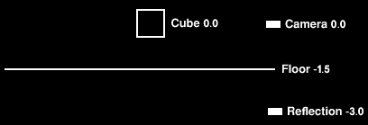
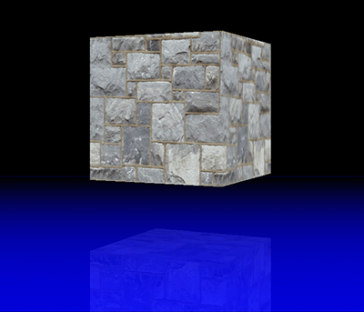
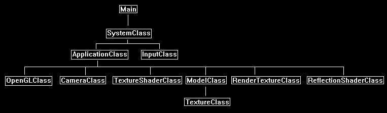

This tutorial will cover how to implement basic planar reflections in OpenGL 4.0 using GLSL and C++.
The code in this tutorial is based on the previous tutorials.
In this tutorial we will render a cube being reflected by a blue floor.
To create the reflection effect, we first need a reflection view matrix.
This is the same as the regular camera created view matrix except that we render from the opposite side of the plane to create the reflection.
The cube is being reflected by the floor object so we need to setup the reflection matrix along the Y plane to match the floor.
In this example the camera is located at 0.0 on the Y axis and the floor is located at -1.5 on the Y axis,
so our reflection view point will need to be the inverse of the camera in relation to the floor which will end up being -3.0 on the Y axis.
Here is a diagram to illustrate the example:

Now that we have a reflection matrix, we can use it to render the scene from the reflection camera view point instead of the regular camera view point.
And when we render from the reflection view point, we will render that data to a texture instead of the back buffer.
This will give us the reflection of our scene on a texture.
The final step is to make a second render pass of our scene but when we do so we use the reflection render to texture and blend it with the floor.
This will be done using the reflection view matrix and the normal view matrix to project the reflection render texture correctly onto the floor geometry.

Framework
The frame work has been updated to include a new class called ReflectionShaderClass for this tutorial.
This class is the same as the TextureShaderClass except it handles a reflection view matrix and a reflection texture for interfacing with the new GLSL reflection shader code.

We will start the code section of the tutorial by examining the GLSL reflection shader code first:
Reflection.vs
////////////////////////////////////////////////////////////////////////////////
// Filename: reflection.vs
////////////////////////////////////////////////////////////////////////////////
#version 400
/////////////////////
// INPUT VARIABLES //
/////////////////////
in vec3 inputPosition;
in vec2 inputTexCoord;
//////////////////////
// OUTPUT VARIABLES //
//////////////////////
out vec2 texCoord;
We have an output variable that is a 4-float texture coordinate called reflectionPosition.
This will be used to store the projected reflection texture position.
out vec4 reflectionPosition;
///////////////////////
// UNIFORM VARIABLES //
///////////////////////
uniform mat4 worldMatrix;
uniform mat4 viewMatrix;
uniform mat4 projectionMatrix;
We add a new uniform variable for the input reflection matrix.
uniform mat4 reflectionMatrix;
////////////////////////////////////////////////////////////////////////////////
// Vertex Shader
////////////////////////////////////////////////////////////////////////////////
void main(void)
{
mat4 reflectProjectWorld;
// Calculate the position of the vertex against the world, view, and projection matrices.
gl_Position = vec4(inputPosition, 1.0f) * worldMatrix;
gl_Position = gl_Position * viewMatrix;
gl_Position = gl_Position * projectionMatrix;
// Store the texture coordinates for the pixel shader.
texCoord = inputTexCoord;
The first change to the vertex shader is that we create a matrix for transforming the input position values into the projected reflection position.
This matrix is a combination of the reflection matrix, the projection matrix, and the world matrix.
// Create the reflection projection world matrix.
reflectProjectWorld = reflectionMatrix * projectionMatrix;
reflectProjectWorld = worldMatrix * reflectProjectWorld;
Now we transform the input position into the projected reflection position.
These transformed position coordinates will be used in the pixel shader to derive where to map our projected reflection texture to.
// Calculate the input position against the reflectProjectWorld matrix.
reflectionPosition = vec4(inputPosition, 1.0f) * reflectProjectWorld;
}
Reflection.ps
////////////////////////////////////////////////////////////////////////////////
// Filename: reflection.ps
////////////////////////////////////////////////////////////////////////////////
#version 400
/////////////////////
// INPUT VARIABLES //
/////////////////////
in vec2 texCoord;
in vec4 reflectionPosition;
//////////////////////
// OUTPUT VARIABLES //
//////////////////////
out vec4 outputColor;
///////////////////////
// UNIFORM VARIABLES //
///////////////////////
uniform sampler2D shaderTexture;
We add a new texture variable for storing the scene reflection render to texture.
uniform sampler2D reflectionTexture;
////////////////////////////////////////////////////////////////////////////////
// Pixel Shader
////////////////////////////////////////////////////////////////////////////////
void main(void)
{
vec4 textureColor;
vec2 reflectTexCoord;
vec4 reflectionColor;
// Sample the pixel color from the texture using the sampler at this texture coordinate location.
textureColor = texture(shaderTexture, texCoord);
The input reflection position homogenous coordinates need to be converted to proper texture coordinates.
To do so first divide by the W coordinate.
This now leaves us with tu and tv coordinates in the -1 to +1 range.
To remap the texture coordinates to a 0 to +1 range just divide by 2 and add 0.5.
// Calculate the projected reflection texture coordinates.
reflectTexCoord.x = reflectionPosition.x / reflectionPosition.w / 2.0f + 0.5f;
reflectTexCoord.y = reflectionPosition.y / reflectionPosition.w / 2.0f + 0.5f;
Now when we sample from the reflection texture, we use the projected reflection coordinates that have been converted to get the right reflection pixel for this projected reflection position.
// Sample the texture pixel from the reflection texture using the projected texture coordinates.
reflectionColor = texture(reflectionTexture, reflectTexCoord);
Finally, we blend the texture from the floor with the reflection texture to create the effect of the reflected cube on the floor.
Here we use a linear interpolation between the two textures with a factor of 0.15.
You can change this to a different blend equation or change the factor amount for a different or stronger effect.
// Use the mix function to perform a linear interpolation between the two texture values for a blend effect.
outputColor = mix(textureColor, reflectionColor, 0.15f);
}
Reflectionshaderclass.h
The ReflectionShaderClass is the same as the TextureShaderClass except that it also handles a reflection view matrix buffer and a reflection texture.
////////////////////////////////////////////////////////////////////////////////
// Filename: reflectionshaderclass.h
////////////////////////////////////////////////////////////////////////////////
#ifndef _REFLECTIONSHADERCLASS_H_
#define _REFLECTIONSHADERCLASS_H_
//////////////
// INCLUDES //
//////////////
#include <iostream>
using namespace std;
///////////////////////
// MY CLASS INCLUDES //
///////////////////////
#include "openglclass.h"
////////////////////////////////////////////////////////////////////////////////
// Class name: ReflectionShaderClass
////////////////////////////////////////////////////////////////////////////////
class ReflectionShaderClass
{
public:
ReflectionShaderClass();
ReflectionShaderClass(const ReflectionShaderClass&);
~ReflectionShaderClass();
bool Initialize(OpenGLClass*);
void Shutdown();
bool SetShaderParameters(float*, float*, float*, float*);
private:
bool InitializeShader(char*, char*);
void ShutdownShader();
char* LoadShaderSourceFile(char*);
void OutputShaderErrorMessage(unsigned int, char*);
void OutputLinkerErrorMessage(unsigned int);
private:
OpenGLClass* m_OpenGLPtr;
unsigned int m_vertexShader;
unsigned int m_fragmentShader;
unsigned int m_shaderProgram;
};
#endif
Reflectionshaderclass.cpp
////////////////////////////////////////////////////////////////////////////////
// Filename: reflectionshaderclass.cpp
////////////////////////////////////////////////////////////////////////////////
#include "reflectionshaderclass.h"
ReflectionShaderClass::ReflectionShaderClass()
{
m_OpenGLPtr = 0;
}
ReflectionShaderClass::ReflectionShaderClass(const ReflectionShaderClass& other)
{
}
ReflectionShaderClass::~ReflectionShaderClass()
{
}
bool ReflectionShaderClass::Initialize(OpenGLClass* OpenGL)
{
char vsFilename[128];
char psFilename[128];
bool result;
// Store the pointer to the OpenGL object.
m_OpenGLPtr = OpenGL;
We load the reflection.vs and reflection.ps GLSL shader files here.
// Set the location and names of the shader files.
strcpy(vsFilename, "../Engine/reflection.vs");
strcpy(psFilename, "../Engine/reflection.ps");
// Initialize the vertex and pixel shaders.
result = InitializeShader(vsFilename, psFilename);
if(!result)
{
return false;
}
return true;
}
void ReflectionShaderClass::Shutdown()
{
// Shutdown the shader.
ShutdownShader();
// Release the pointer to the OpenGL object.
m_OpenGLPtr = 0;
return;
}
bool ReflectionShaderClass::InitializeShader(char* vsFilename, char* fsFilename)
{
const char* vertexShaderBuffer;
const char* fragmentShaderBuffer;
int status;
// Load the vertex shader source file into a text buffer.
vertexShaderBuffer = LoadShaderSourceFile(vsFilename);
if(!vertexShaderBuffer)
{
return false;
}
// Load the fragment shader source file into a text buffer.
fragmentShaderBuffer = LoadShaderSourceFile(fsFilename);
if(!fragmentShaderBuffer)
{
return false;
}
// Create a vertex and fragment shader object.
m_vertexShader = m_OpenGLPtr->glCreateShader(GL_VERTEX_SHADER);
m_fragmentShader = m_OpenGLPtr->glCreateShader(GL_FRAGMENT_SHADER);
// Copy the shader source code strings into the vertex and fragment shader objects.
m_OpenGLPtr->glShaderSource(m_vertexShader, 1, &vertexShaderBuffer, NULL);
m_OpenGLPtr->glShaderSource(m_fragmentShader, 1, &fragmentShaderBuffer, NULL);
// Release the vertex and fragment shader buffers.
delete [] vertexShaderBuffer;
vertexShaderBuffer = 0;
delete [] fragmentShaderBuffer;
fragmentShaderBuffer = 0;
// Compile the shaders.
m_OpenGLPtr->glCompileShader(m_vertexShader);
m_OpenGLPtr->glCompileShader(m_fragmentShader);
// Check to see if the vertex shader compiled successfully.
m_OpenGLPtr->glGetShaderiv(m_vertexShader, GL_COMPILE_STATUS, &status);
if(status != 1)
{
// If it did not compile then write the syntax error message out to a text file for review.
OutputShaderErrorMessage(m_vertexShader, vsFilename);
return false;
}
// Check to see if the fragment shader compiled successfully.
m_OpenGLPtr->glGetShaderiv(m_fragmentShader, GL_COMPILE_STATUS, &status);
if(status != 1)
{
// If it did not compile then write the syntax error message out to a text file for review.
OutputShaderErrorMessage(m_fragmentShader, fsFilename);
return false;
}
// Create a shader program object.
m_shaderProgram = m_OpenGLPtr->glCreateProgram();
// Attach the vertex and fragment shader to the program object.
m_OpenGLPtr->glAttachShader(m_shaderProgram, m_vertexShader);
m_OpenGLPtr->glAttachShader(m_shaderProgram, m_fragmentShader);
// Bind the shader input variables.
m_OpenGLPtr->glBindAttribLocation(m_shaderProgram, 0, "inputPosition");
m_OpenGLPtr->glBindAttribLocation(m_shaderProgram, 1, "inputTexCoord");
// Link the shader program.
m_OpenGLPtr->glLinkProgram(m_shaderProgram);
// Check the status of the link.
m_OpenGLPtr->glGetProgramiv(m_shaderProgram, GL_LINK_STATUS, &status);
if(status != 1)
{
// If it did not link then write the syntax error message out to a text file for review.
OutputLinkerErrorMessage(m_shaderProgram);
return false;
}
return true;
}
void ReflectionShaderClass::ShutdownShader()
{
// Detach the vertex and fragment shaders from the program.
m_OpenGLPtr->glDetachShader(m_shaderProgram, m_vertexShader);
m_OpenGLPtr->glDetachShader(m_shaderProgram, m_fragmentShader);
// Delete the vertex and fragment shaders.
m_OpenGLPtr->glDeleteShader(m_vertexShader);
m_OpenGLPtr->glDeleteShader(m_fragmentShader);
// Delete the shader program.
m_OpenGLPtr->glDeleteProgram(m_shaderProgram);
return;
}
char* ReflectionShaderClass::LoadShaderSourceFile(char* filename)
{
FILE* filePtr;
char* buffer;
long fileSize, count;
int error;
// Open the shader file for reading in text modee.
filePtr = fopen(filename, "r");
if(filePtr == NULL)
{
return 0;
}
// Go to the end of the file and get the size of the file.
fseek(filePtr, 0, SEEK_END);
fileSize = ftell(filePtr);
// Initialize the buffer to read the shader source file into, adding 1 for an extra null terminator.
buffer = new char[fileSize + 1];
// Return the file pointer back to the beginning of the file.
fseek(filePtr, 0, SEEK_SET);
// Read the shader text file into the buffer.
count = fread(buffer, 1, fileSize, filePtr);
if(count != fileSize)
{
return 0;
}
// Close the file.
error = fclose(filePtr);
if(error != 0)
{
return 0;
}
// Null terminate the buffer.
buffer[fileSize] = '\0';
return buffer;
}
void ReflectionShaderClass::OutputShaderErrorMessage(unsigned int shaderId, char* shaderFilename)
{
long count;
int logSize, error;
char* infoLog;
FILE* filePtr;
// Get the size of the string containing the information log for the failed shader compilation message.
m_OpenGLPtr->glGetShaderiv(shaderId, GL_INFO_LOG_LENGTH, &logSize);
// Increment the size by one to handle also the null terminator.
logSize++;
// Create a char buffer to hold the info log.
infoLog = new char[logSize];
// Now retrieve the info log.
m_OpenGLPtr->glGetShaderInfoLog(shaderId, logSize, NULL, infoLog);
// Open a text file to write the error message to.
filePtr = fopen("shader-error.txt", "w");
if(filePtr == NULL)
{
cout << "Error opening shader error message output file." << endl;
return;
}
// Write out the error message.
count = fwrite(infoLog, sizeof(char), logSize, filePtr);
if(count != logSize)
{
cout << "Error writing shader error message output file." << endl;
return;
}
// Close the file.
error = fclose(filePtr);
if(error != 0)
{
cout << "Error closing shader error message output file." << endl;
return;
}
// Notify the user to check the text file for compile errors.
cout << "Error compiling shader. Check shader-error.txt for error message. Shader filename: " << shaderFilename << endl;
return;
}
void ReflectionShaderClass::OutputLinkerErrorMessage(unsigned int programId)
{
long count;
FILE* filePtr;
int logSize, error;
char* infoLog;
// Get the size of the string containing the information log for the failed shader compilation message.
m_OpenGLPtr->glGetProgramiv(programId, GL_INFO_LOG_LENGTH, &logSize);
// Increment the size by one to handle also the null terminator.
logSize++;
// Create a char buffer to hold the info log.
infoLog = new char[logSize];
// Now retrieve the info log.
m_OpenGLPtr->glGetProgramInfoLog(programId, logSize, NULL, infoLog);
// Open a file to write the error message to.
filePtr = fopen("linker-error.txt", "w");
if(filePtr == NULL)
{
cout << "Error opening linker error message output file." << endl;
return;
}
// Write out the error message.
count = fwrite(infoLog, sizeof(char), logSize, filePtr);
if(count != logSize)
{
cout << "Error writing linker error message output file." << endl;
return;
}
// Close the file.
error = fclose(filePtr);
if(error != 0)
{
cout << "Error closing linker error message output file." << endl;
return;
}
// Pop a message up on the screen to notify the user to check the text file for linker errors.
cout << "Error linking shader program. Check linker-error.txt for message." << endl;
return;
}
The SetShaderParameters function now takes as input the reflectionMatrix matrix that we will use in the vertex shader.
Since it is a matrix, we will need to transpose it before sending it into the vertex shader similar to the other matrices.
bool ReflectionShaderClass::SetShaderParameters(float* worldMatrix, float* viewMatrix, float* projectionMatrix, float* reflectionMatrix)
{
float tpWorldMatrix[16], tpViewMatrix[16], tpProjectionMatrix[16], tpReflectionMatrix[16];
int location;
// Transpose the matrices to prepare them for the shader.
m_OpenGLPtr->MatrixTranspose(tpWorldMatrix, worldMatrix);
m_OpenGLPtr->MatrixTranspose(tpViewMatrix, viewMatrix);
m_OpenGLPtr->MatrixTranspose(tpProjectionMatrix, projectionMatrix);
m_OpenGLPtr->MatrixTranspose(tpReflectionMatrix, reflectionMatrix);
// Install the shader program as part of the current rendering state.
m_OpenGLPtr->glUseProgram(m_shaderProgram);
// Set the world matrix in the vertex shader.
location = m_OpenGLPtr->glGetUniformLocation(m_shaderProgram, "worldMatrix");
if(location == -1)
{
cout << "World matrix not set." << endl;
}
m_OpenGLPtr->glUniformMatrix4fv(location, 1, false, tpWorldMatrix);
// Set the view matrix in the vertex shader.
location = m_OpenGLPtr->glGetUniformLocation(m_shaderProgram, "viewMatrix");
if(location == -1)
{
cout << "View matrix not set." << endl;
}
m_OpenGLPtr->glUniformMatrix4fv(location, 1, false, tpViewMatrix);
// Set the projection matrix in the vertex shader.
location = m_OpenGLPtr->glGetUniformLocation(m_shaderProgram, "projectionMatrix");
if(location == -1)
{
cout << "Projection matrix not set." << endl;
}
m_OpenGLPtr->glUniformMatrix4fv(location, 1, false, tpProjectionMatrix);
// Set the reflection matrix in the vertex shader.
location = m_OpenGLPtr->glGetUniformLocation(m_shaderProgram, "reflectionMatrix");
if(location == -1)
{
cout << "Reflection matrix not set." << endl;
}
m_OpenGLPtr->glUniformMatrix4fv(location, 1, false, tpReflectionMatrix);
We set the regular floor texture here in the pixel shader in texture unit 0.
// Set the texture in the pixel shader to use the data from the first texture unit.
location = m_OpenGLPtr->glGetUniformLocation(m_shaderProgram, "shaderTexture");
if(location == -1)
{
cout << "Shader texture not set." << endl;
}
m_OpenGLPtr->glUniform1i(location, 0);
And here we set the reflection render texture in the pixel shader in texture unit 1.
// Set the texture in the pixel shader to use the data from the second texture unit.
location = m_OpenGLPtr->glGetUniformLocation(m_shaderProgram, "reflectionTexture");
if(location == -1)
{
cout << "Reflection texture not set." << endl;
}
m_OpenGLPtr->glUniform1i(location, 1);
return true;
}
Cameraclass.h
The CameraClass has been slightly modified to handle planar reflections.
////////////////////////////////////////////////////////////////////////////////
// Filename: cameraclass.h
////////////////////////////////////////////////////////////////////////////////
#ifndef _CAMERACLASS_H_
#define _CAMERACLASS_H_
//////////////
// INCLUDES //
//////////////
#include <math.h>
////////////////////////////////////////////////////////////////////////////////
// Class name: CameraClass
////////////////////////////////////////////////////////////////////////////////
class CameraClass
{
private:
struct VectorType
{
float x, y, z;
};
public:
CameraClass();
CameraClass(const CameraClass&);
~CameraClass();
void SetPosition(float, float, float);
void SetRotation(float, float, float);
void GetPosition(float*);
void GetRotation(float*);
void Render();
void GetViewMatrix(float*);
void RenderReflection(float);
void GetReflectionViewMatrix(float*);
private:
void MatrixRotationYawPitchRoll(float*, float, float, float);
void TransformCoord(VectorType&, float*);
void BuildViewMatrix(float*, VectorType, VectorType, VectorType);
private:
float m_positionX, m_positionY, m_positionZ;
float m_rotationX, m_rotationY, m_rotationZ;
float m_viewMatrix[16];
float m_reflectionViewMatrix[16];
};
#endif
Cameraclass.cpp
////////////////////////////////////////////////////////////////////////////////
// Filename: cameraclass.cpp
////////////////////////////////////////////////////////////////////////////////
#include "cameraclass.h"
CameraClass::CameraClass()
{
m_positionX = 0.0f;
m_positionY = 0.0f;
m_positionZ = 0.0f;
m_rotationX = 0.0f;
m_rotationY = 0.0f;
m_rotationZ = 0.0f;
}
CameraClass::CameraClass(const CameraClass& other)
{
}
CameraClass::~CameraClass()
{
}
void CameraClass::SetPosition(float x, float y, float z)
{
m_positionX = x;
m_positionY = y;
m_positionZ = z;
return;
}
void CameraClass::SetRotation(float x, float y, float z)
{
m_rotationX = x;
m_rotationY = y;
m_rotationZ = z;
return;
}
void CameraClass::GetPosition(float* position)
{
position[0] = m_positionX;
position[1] = m_positionY;
position[2] = m_positionZ;
return;
}
void CameraClass::GetRotation(float* rotation)
{
rotation[0] = m_rotationX;
rotation[1] = m_rotationY;
rotation[2] = m_rotationZ;
return;
}
void CameraClass::Render()
{
VectorType up, position, lookAt;
float yaw, pitch, roll;
float rotationMatrix[9];
// Setup the vector that points upwards.
up.x = 0.0f;
up.y = 1.0f;
up.z = 0.0f;
// Setup the position of the camera in the world.
position.x = m_positionX;
position.y = m_positionY;
position.z = m_positionZ;
// Setup where the camera is looking by default.
lookAt.x = 0.0f;
lookAt.y = 0.0f;
lookAt.z = 1.0f;
// Set the yaw (Y axis), pitch (X axis), and roll (Z axis) rotations in radians.
pitch = m_rotationX * 0.0174532925f;
yaw = m_rotationY * 0.0174532925f;
roll = m_rotationZ * 0.0174532925f;
// Create the rotation matrix from the yaw, pitch, and roll values.
MatrixRotationYawPitchRoll(rotationMatrix, yaw, pitch, roll);
// Transform the lookAt and up vector by the rotation matrix so the view is correctly rotated at the origin.
TransformCoord(lookAt, rotationMatrix);
TransformCoord(up, rotationMatrix);
// Translate the rotated camera position to the location of the viewer.
lookAt.x = position.x + lookAt.x;
lookAt.y = position.y + lookAt.y;
lookAt.z = position.z + lookAt.z;
// Finally create the view matrix from the three updated vectors.
BuildViewMatrix(m_viewMatrix, position, lookAt, up);
return;
}
void CameraClass::MatrixRotationYawPitchRoll(float* matrix, float yaw, float pitch, float roll)
{
float cYaw, cPitch, cRoll, sYaw, sPitch, sRoll;
// Get the cosine and sin of the yaw, pitch, and roll.
cYaw = cosf(yaw);
cPitch = cosf(pitch);
cRoll = cosf(roll);
sYaw = sinf(yaw);
sPitch = sinf(pitch);
sRoll = sinf(roll);
// Calculate the yaw, pitch, roll rotation matrix.
matrix[0] = (cRoll * cYaw) + (sRoll * sPitch * sYaw);
matrix[1] = (sRoll * cPitch);
matrix[2] = (cRoll * -sYaw) + (sRoll * sPitch * cYaw);
matrix[3] = (-sRoll * cYaw) + (cRoll * sPitch * sYaw);
matrix[4] = (cRoll * cPitch);
matrix[5] = (sRoll * sYaw) + (cRoll * sPitch * cYaw);
matrix[6] = (cPitch * sYaw);
matrix[7] = -sPitch;
matrix[8] = (cPitch * cYaw);
return;
}
void CameraClass::TransformCoord(VectorType& vector, float* matrix)
{
float x, y, z;
// Transform the vector by the 3x3 matrix.
x = (vector.x * matrix[0]) + (vector.y * matrix[3]) + (vector.z * matrix[6]);
y = (vector.x * matrix[1]) + (vector.y * matrix[4]) + (vector.z * matrix[7]);
z = (vector.x * matrix[2]) + (vector.y * matrix[5]) + (vector.z * matrix[8]);
// Store the result in the reference.
vector.x = x;
vector.y = y;
vector.z = z;
return;
}
void CameraClass::BuildViewMatrix(float* matrix, VectorType position, VectorType lookAt, VectorType up)
{
VectorType zAxis, xAxis, yAxis;
float length, result1, result2, result3;
// zAxis = normal(lookAt - position)
zAxis.x = lookAt.x - position.x;
zAxis.y = lookAt.y - position.y;
zAxis.z = lookAt.z - position.z;
length = sqrt((zAxis.x * zAxis.x) + (zAxis.y * zAxis.y) + (zAxis.z * zAxis.z));
zAxis.x = zAxis.x / length;
zAxis.y = zAxis.y / length;
zAxis.z = zAxis.z / length;
// xAxis = normal(cross(up, zAxis))
xAxis.x = (up.y * zAxis.z) - (up.z * zAxis.y);
xAxis.y = (up.z * zAxis.x) - (up.x * zAxis.z);
xAxis.z = (up.x * zAxis.y) - (up.y * zAxis.x);
length = sqrt((xAxis.x * xAxis.x) + (xAxis.y * xAxis.y) + (xAxis.z * xAxis.z));
xAxis.x = xAxis.x / length;
xAxis.y = xAxis.y / length;
xAxis.z = xAxis.z / length;
// yAxis = cross(zAxis, xAxis)
yAxis.x = (zAxis.y * xAxis.z) - (zAxis.z * xAxis.y);
yAxis.y = (zAxis.z * xAxis.x) - (zAxis.x * xAxis.z);
yAxis.z = (zAxis.x * xAxis.y) - (zAxis.y * xAxis.x);
// -dot(xAxis, position)
result1 = ((xAxis.x * position.x) + (xAxis.y * position.y) + (xAxis.z * position.z)) * -1.0f;
// -dot(yaxis, position)
result2 = ((yAxis.x * position.x) + (yAxis.y * position.y) + (yAxis.z * position.z)) * -1.0f;
// -dot(zaxis, position)
result3 = ((zAxis.x * position.x) + (zAxis.y * position.y) + (zAxis.z * position.z)) * -1.0f;
// Set the computed values in the view matrix.
matrix[0] = xAxis.x;
matrix[1] = yAxis.x;
matrix[2] = zAxis.x;
matrix[3] = 0.0f;
matrix[4] = xAxis.y;
matrix[5] = yAxis.y;
matrix[6] = zAxis.y;
matrix[7] = 0.0f;
matrix[8] = xAxis.z;
matrix[9] = yAxis.z;
matrix[10] = zAxis.z;
matrix[11] = 0.0f;
matrix[12] = result1;
matrix[13] = result2;
matrix[14] = result3;
matrix[15] = 1.0f;
return;
}
void CameraClass::GetViewMatrix(float* matrix)
{
matrix[0] = m_viewMatrix[0];
matrix[1] = m_viewMatrix[1];
matrix[2] = m_viewMatrix[2];
matrix[3] = m_viewMatrix[3];
matrix[4] = m_viewMatrix[4];
matrix[5] = m_viewMatrix[5];
matrix[6] = m_viewMatrix[6];
matrix[7] = m_viewMatrix[7];
matrix[8] = m_viewMatrix[8];
matrix[9] = m_viewMatrix[9];
matrix[10] = m_viewMatrix[10];
matrix[11] = m_viewMatrix[11];
matrix[12] = m_viewMatrix[12];
matrix[13] = m_viewMatrix[13];
matrix[14] = m_viewMatrix[14];
matrix[15] = m_viewMatrix[15];
return;
}
The new RenderReflection function builds a reflection view matrix the same way as the regular Render function builds a view matrix.
The main difference is that we take as input the height of the object that will act as the Y axis plane and then we use that height to invert the position.y variable for reflection.
We also need to invert the pitch.
This will build the reflection view matrix that we can then use in the shader.
Note that this function only works for the Y axis plane.
void CameraClass::RenderReflection(float height)
{
VectorType up, position, lookAt;
float yaw, pitch, roll;
float rotationMatrix[9];
// Setup the vector that points upwards.
up.x = 0.0f;
up.y = 1.0f;
up.z = 0.0f;
// Setup the position of the camera in the world.
// For planar reflection invert the Y position of the camera.
position.x = m_positionX;
position.y = -m_positionY + (height * 2.0f);
position.z = m_positionZ;
// Setup where the camera is looking by default.
lookAt.x = 0.0f;
lookAt.y = 0.0f;
lookAt.z = 1.0f;
// Set the yaw (Y axis), pitch (X axis), and roll (Z axis) rotations in radians.
pitch = (-1.0f * m_rotationX) * 0.0174532925f; // Invert for reflection
yaw = m_rotationY * 0.0174532925f;
roll = m_rotationZ * 0.0174532925f;
// Create the rotation matrix from the yaw, pitch, and roll values.
MatrixRotationYawPitchRoll(rotationMatrix, yaw, pitch, roll);
// Transform the lookAt and up vector by the rotation matrix so the view is correctly rotated at the origin.
TransformCoord(lookAt, rotationMatrix);
TransformCoord(up, rotationMatrix);
// Translate the rotated camera position to the location of the viewer.
lookAt.x = position.x + lookAt.x;
lookAt.y = position.y + lookAt.y;
lookAt.z = position.z + lookAt.z;
// Finally create the view matrix from the three updated vectors.
BuildViewMatrix(m_reflectionViewMatrix, position, lookAt, up);
return;
}
The GetReflectionViewMatrix function returns our new reflection view matrix to any calling functions.
void CameraClass::GetReflectionViewMatrix(float* matrix)
{
matrix[0] = m_reflectionViewMatrix[0];
matrix[1] = m_reflectionViewMatrix[1];
matrix[2] = m_reflectionViewMatrix[2];
matrix[3] = m_reflectionViewMatrix[3];
matrix[4] = m_reflectionViewMatrix[4];
matrix[5] = m_reflectionViewMatrix[5];
matrix[6] = m_reflectionViewMatrix[6];
matrix[7] = m_reflectionViewMatrix[7];
matrix[8] = m_reflectionViewMatrix[8];
matrix[9] = m_reflectionViewMatrix[9];
matrix[10] = m_reflectionViewMatrix[10];
matrix[11] = m_reflectionViewMatrix[11];
matrix[12] = m_reflectionViewMatrix[12];
matrix[13] = m_reflectionViewMatrix[13];
matrix[14] = m_reflectionViewMatrix[14];
matrix[15] = m_reflectionViewMatrix[15];
return;
}
Applicationclass.h
The ApplicationClass has the reflectionshaderclass.h included and a new ReflectionShaderClass variable.
We also add two separate models for the cube and the floor.
The TextureShaderClass is added to render the cube both normally and in a reflection.
And we have a render texture for rendering the reflection to.
////////////////////////////////////////////////////////////////////////////////
// Filename: applicationclass.h
////////////////////////////////////////////////////////////////////////////////
#ifndef _APPLICATIONCLASS_H_
#define _APPLICATIONCLASS_H_
/////////////
// GLOBALS //
/////////////
const bool FULL_SCREEN = false;
const bool VSYNC_ENABLED = true;
const float SCREEN_NEAR = 0.3f;
const float SCREEN_DEPTH = 1000.0f;
///////////////////////
// MY CLASS INCLUDES //
///////////////////////
#include "inputclass.h"
#include "openglclass.h"
#include "modelclass.h"
#include "cameraclass.h"
#include "textureshaderclass.h"
#include "reflectionshaderclass.h"
#include "rendertextureclass.h"
////////////////////////////////////////////////////////////////////////////////
// Class Name: ApplicationClass
////////////////////////////////////////////////////////////////////////////////
class ApplicationClass
{
public:
ApplicationClass();
ApplicationClass(const ApplicationClass&);
~ApplicationClass();
bool Initialize(Display*, Window, int, int);
void Shutdown();
bool Frame(InputClass*);
private:
bool RenderReflectionToTexture(float);
bool Render(float);
private:
OpenGLClass* m_OpenGL;
ModelClass *m_CubeModel, *m_FloorModel;
CameraClass* m_Camera;
TextureShaderClass* m_TextureShader;
ReflectionShaderClass* m_ReflectionShader;
RenderTextureClass* m_RenderTexture;
};
#endif
Applicationclass.cpp
////////////////////////////////////////////////////////////////////////////////
// Filename: applicationclass.cpp
////////////////////////////////////////////////////////////////////////////////
#include "applicationclass.h"
ApplicationClass::ApplicationClass()
{
m_OpenGL = 0;
m_CubeModel = 0;
m_FloorModel = 0;
m_Camera = 0;
m_TextureShader = 0;
m_ReflectionShader = 0;
m_RenderTexture = 0;
}
ApplicationClass::ApplicationClass(const ApplicationClass& other)
{
}
ApplicationClass::~ApplicationClass()
{
}
bool ApplicationClass::Initialize(Display* display, Window win, int screenWidth, int screenHeight)
{
char modelFilename1[128], modelFilename2[128];
char textureFilename1[128], textureFilename2[128];
bool result;
// Create and initialize the OpenGL object.
m_OpenGL = new OpenGLClass;
result = m_OpenGL->Initialize(display, win, screenWidth, screenHeight, SCREEN_NEAR, SCREEN_DEPTH, VSYNC_ENABLED);
if(!result)
{
cout << "Error: Could not initialize the OpenGL object." << endl;
return false;
}
// Create and initialize the camera object.
m_Camera = new CameraClass;
m_Camera->SetPosition(0.0f, 0.0f, -10.0f);
m_Camera->Render();
Create and initialize both the cube and the blue floor model objects.
// Set the file names of the models.
strcpy(modelFilename1, "../Engine/data/cube.txt");
strcpy(modelFilename2, "../Engine/data/floor.txt");
// Set the file names of the textures.
strcpy(textureFilename1, "../Engine/data/stone01.tga");
strcpy(textureFilename2, "../Engine/data/blue01.tga");
// Create and initialize the cube model object.
m_CubeModel = new ModelClass;
result = m_CubeModel->Initialize(m_OpenGL, modelFilename1, textureFilename1, true, NULL, true, NULL, true);
if(!result)
{
cout << "Error: Could not initialize the cube model object." << endl;
return false;
}
// Create and initialize the floor model object.
m_FloorModel = new ModelClass;
result = m_FloorModel->Initialize(m_OpenGL, modelFilename2, textureFilename2, true, NULL, true, NULL, true);
if(!result)
{
cout << "Error: Could not initialize the floor model object." << endl;
return false;
}
We load the texture shader here.
// Create and initialize the texture shader object.
m_TextureShader = new TextureShaderClass;
result = m_TextureShader->Initialize(m_OpenGL);
if(!result)
{
cout << "Error: Could not initialize the texture shader object." << endl;
return false;
}
Here we load the new reflection shader class object.
// Create and initialize the reflection shader object.
m_ReflectionShader = new ReflectionShaderClass;
result = m_ReflectionShader->Initialize(m_OpenGL);
if(!result)
{
cout << "Error: Could not initialize the reflection shader object." << endl;
return false;
}
Here we load the render texture that will be used to render the reflection of the cube onto.
// Create and initialize the render to texture object.
m_RenderTexture = new RenderTextureClass;
result = m_RenderTexture->Initialize(m_OpenGL, screenWidth, screenHeight, SCREEN_NEAR, SCREEN_DEPTH, 0);
if(!result)
{
cout << "Error: Could not initialize the render texture object." << endl;
return false;
}
return true;
}
void ApplicationClass::Shutdown()
{
// Release the render to texture object.
if(m_RenderTexture)
{
m_RenderTexture->Shutdown();
delete m_RenderTexture;
m_RenderTexture = 0;
}
// Release the reflection shader object.
if(m_ReflectionShader)
{
m_ReflectionShader->Shutdown();
delete m_ReflectionShader;
m_ReflectionShader = 0;
}
// Release the texture shader object.
if(m_TextureShader)
{
m_TextureShader->Shutdown();
delete m_TextureShader;
m_TextureShader = 0;
}
// Release the floor model object.
if(m_FloorModel)
{
m_FloorModel->Shutdown();
delete m_FloorModel;
m_FloorModel = 0;
}
// Release the cube model object.
if(m_CubeModel)
{
m_CubeModel->Shutdown();
delete m_CubeModel;
m_CubeModel = 0;
}
// Release the camera object.
if(m_Camera)
{
delete m_Camera;
m_Camera = 0;
}
// Release the OpenGL object.
if(m_OpenGL)
{
m_OpenGL->Shutdown();
delete m_OpenGL;
m_OpenGL = 0;
}
return;
}
bool ApplicationClass::Frame(InputClass* Input)
{
static float rotation = 360.0f;
bool result;
// Check if the escape key has been pressed, if so quit.
if(Input->IsEscapePressed() == true)
{
return false;
}
// Update the rotation variable each frame.
rotation -= 0.0174532925f * 1.0f;
if(rotation <= 0.0f)
{
rotation += 360.0f;
}
First render the scene as a reflection to a render texture.
// Render the entire scene as a reflection to the texture first.
result = RenderReflectionToTexture(rotation);
if(!result)
{
return false;
}
Then render the scene normally and use the projected reflection texture to blend into the floor and create the reflection effect.
// Render the final graphics scene to the back buffer.
result = Render(rotation);
if(!result)
{
return false;
}
return true;
}
bool ApplicationClass::RenderReflectionToTexture(float rotation)
{
float worldMatrix[16], reflectionViewMatrix[16], projectionMatrix[16];
bool result;
// Set the render target to be the render texture and clear it.
m_RenderTexture->SetRenderTarget();
m_RenderTexture->ClearRenderTarget(0.0f, 0.0f, 0.0f, 1.0f);
Before rendering the scene to a texture, we need to create the reflection matrix using the position of the floor (-1.5) as the height input variable.
// Use the camera to calculate the reflection matrix.
m_Camera->RenderReflection(-1.5f);
Now render the scene as normal but use the reflection matrix instead of the normal view matrix.
Also, there is no need to render the floor as we only need to render what will be reflected (the spinning cube).
// Get the reflection view matrix.
m_Camera->GetReflectionViewMatrix(reflectionViewMatrix);
// Get the camera reflection view matrix instead of the regular camera view matrix. Also good practice to use the projection matrix from the render texture.
m_OpenGL->GetWorldMatrix(worldMatrix);
m_RenderTexture->GetProjectionMatrix(projectionMatrix);
// Rotate the world matrix by the rotation value so that the cube will spin.
m_OpenGL->MatrixRotationY(worldMatrix, rotation);
// Set the texture shader as the current shader program and set the matrices that it will use for rendering.
result = m_TextureShader->SetShaderParameters(worldMatrix, reflectionViewMatrix, projectionMatrix);
if(!result)
{
return false;
}
// Render the cube model using the texture shader and the reflection view matrix.
m_CubeModel->SetTexture1(0);
m_CubeModel->Render();
// Reset the render target back to the original back buffer and not the render to texture anymore. And reset the viewport back to the original.
m_OpenGL->SetBackBufferRenderTarget();
m_OpenGL->ResetViewport();
return true;
}
bool ApplicationClass::Render(float rotation)
{
float worldMatrix[16], viewMatrix[16], projectionMatrix[16], reflectionViewMatrix[16];
bool result;
Start by rendering the spinning cube as normal.
// Clear the buffers to begin the scene.
m_OpenGL->BeginScene(0.0f, 0.0f, 0.0f, 1.0f);
// Get the world, view, and projection matrices from the opengl and camera objects.
m_OpenGL->GetWorldMatrix(worldMatrix);
m_Camera->GetViewMatrix(viewMatrix);
m_OpenGL->GetProjectionMatrix(projectionMatrix);
// Rotate the world matrix by the rotation value so that the cube will spin.
m_OpenGL->MatrixRotationY(worldMatrix, rotation);
// Set the texture shader as the current shader program and set the matrices that it will use for rendering.
result = m_TextureShader->SetShaderParameters(worldMatrix, viewMatrix, projectionMatrix);
if(!result)
{
return false;
}
// Render the cube model as normal with the texture shader.
m_CubeModel->SetTexture1(0);
m_CubeModel->Render();
Now render the floor using the reflection shader to blend the reflected render texture of the cube into the blue floor model.
// Now get the world matrix again and translate down for the floor model to render underneath the cube.
m_OpenGL->GetWorldMatrix(worldMatrix);
m_OpenGL->MatrixTranslation(worldMatrix, 0.0f, -1.5f, 0.0f);
// Get the camera reflection view matrix for the reflection shader.
m_Camera->GetReflectionViewMatrix(reflectionViewMatrix);
// Render the floor model using the reflection shader, reflection texture, and reflection view matrix.
result = m_ReflectionShader->SetShaderParameters(worldMatrix, viewMatrix, projectionMatrix, reflectionViewMatrix);
if(!result)
{
return false;
}
// Set the render texture as the texture to be used in texture unit 1 for the reflection shader.
m_RenderTexture->SetTexture(1);
// Render the floor model using the reflection shader and using texture unit 0 for the floor texture and texture unit 1 for the reflection render texture.
m_FloorModel->SetTexture1(0);
m_FloorModel->Render();
// Present the rendered scene to the screen.
m_OpenGL->EndScene();
return true;
}
Summary
We now have a planar reflection effect that can be used to mirror objects and blend them as reflections into other objects.
To Do Exercises
1. Recompile and run the program. You should get a spinning cube that is reflected by the blue floor object.
2. Change the blending factor and try a different blending equation to produce a different effect.
3. Change the planar reflection to the Z plane and move/rotate the floor object to create an upright mirror effect.
Source Code
Source Code and Data Files: gl4linuxtut30_src.tar.gz